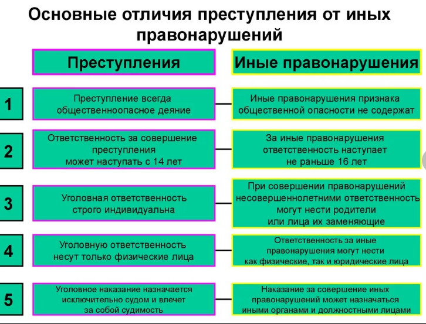

Что такое ответственность?
Ответственность – необходимость, обязанность гражданина отвечать за свои действия, поступки, быть ответственным за них.
Существует 4 вида юридической ответственности в зависимости от вида нарушениях:
1.Административная ответственность несовершеннолетних.
Административная ответственность применяется за нарушения, предусмотренные Кодексом об административных правонарушениях (КоАП). К административным правонарушениям относятся: - появление в общественных местах в состоянии алкогольного или наркотического опьянения; - распитие спиртных напитков в общественных местах; - совершение мелкого хулиганства; - нарушение правил дорожного движения; - нарушение противопожарной безопасности и др За административные правонарушения к ответственности привлекаются граждане РФ с 16 лет и предусмотрены следующие виды административной ответственности: штраф, предупреждение, исправительные работы. Если подросток, не достигший 16 лет, совершает административное правонарушение, то наказание несут его родители.2. Уголовная ответственность.
Уголовная ответственность – ответственность за нарушение законов, предусмотренных Уголовным кодексом. Преступление, предусмотренное уголовным законом как общественно опасное, посягающее на общественный строй, собственность, личность, права и свободы граждан, общественный порядок (убийство, грабёж, изнасилование, оскорбления, мелкие хищения, хулиганство). Пример: Представьте себе ситуацию: 14-летний Саша, решив просто порезвиться, на глазах своих сверстников и окружающих взрослых сильно толкнул 13-летнего Мишу. Тот, не удержавшись, упал на проезжую часть дороги и попал под колесо встречной машины. От полученных травм на вторые сутки несовершеннолетний Миша скончался в больнице. Страшная, но вполне реальная ситуация. Под какие юридические нормы попадает шутка» несовершеннолетнего Саши? Статья 87 УК «Уголовная ответственность несовершеннолетних»: Несовершеннолетними признаются лица, которым ко времени совершения преступления исполнилось четырнадцать лет, но не исполнилось восемнадцать лет. Статья 88 УК «Виды наказаний, назначаемых несовершеннолетним»: – штраф; –лишение права заниматься определённой деятельностью; –обязательные работы; –исправительные работы; –арест; –лишение свободы на определённый срок. Несовершеннолетние за совершение преступлений, противоправных деяний также могут быть помещены в специальные учебно- воспитательные учреждения закрытого типа. Причем, в такие учреждения подростки могут быть направлены с 11 лет. Срок лишения свободы для несовершеннолетних не может превышать 10 лет. Лишение свободы отбывается несовершеннолетними в воспитательных колониях общего режима.3. Дисциплинарная ответственность.
Дисциплинарная ответственность - это нарушение трудовых обязанностей, т.е. нарушение трудового законодательства, к примеру: прогул без уважительной причины.4. Гражданско-правовая ответственность. Регулирует имущественные отношения. Наказания к правонарушителю:
возмещение вреда, уплата ущерба.
Существует три вида нарушений: «Проступок. Правонарушение. Преступление».
Проступок – это нарушение правил поведения или вызывающее поведение.